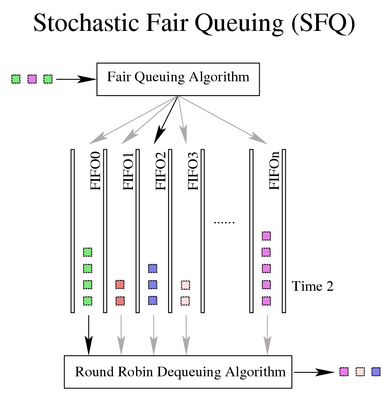

6. Classless Queuing Disciplines (qdiscs)
Each of these queuing disciplines can be used as the primary qdisc on an interface, or can be used inside a leaf class of a classful qdiscs. These are the fundamental schedulers used under Linux. Note that the default scheduler is the pfifo_fast.
6.1. FIFO, First-In First-Out (pfifo and bfifo)
 | This is not the default qdisc on Linux interfaces. Be certain to see Section 6.2 for the full details on the default (pfifo_fast) qdisc. |
The FIFO algorithm forms the basis for the default qdisc on all Linux network interfaces (pfifo_fast). It performs no shaping or rearranging of packets. It simply transmits packets as soon as it can after receiving and queuing them. This is also the qdisc used inside all newly created classes until another qdisc or a class replaces the FIFO.

A real FIFO qdisc must, however, have a size limit (a buffer size) to prevent it from overflowing in case it is unable to dequeue packets as quickly as it receives them. Linux implements two basic FIFO qdiscs, one based on bytes, and one on packets. Regardless of the type of FIFO used, the size of the queue is defined by the parameter limit. For a pfifo the unit is understood to be packets and for a bfifo the unit is understood to be bytes.
Example 6. Specifying a limit for a packet or byte FIFO
[root@leander]# cat bfifo.tcc
/*
* make a FIFO on eth0 with 10kbyte queue size
*
*/
dev eth0 {
egress {
fifo (limit 10kB );
}
}
[root@leander]# tcc < bfifo.tcc
# ================================ Device eth0 ================================
tc qdisc add dev eth0 handle 1:0 root dsmark indices 1 default_index 0
tc qdisc add dev eth0 handle 2:0 parent 1:0 bfifo limit 10240
[root@leander]# cat pfifo.tcc
/*
* make a FIFO on eth0 with 30 packet queue size
*
*/
dev eth0 {
egress {
fifo (limit 30p );
}
}
[root@leander]# tcc < pfifo.tcc
# ================================ Device eth0 ================================
tc qdisc add dev eth0 handle 1:0 root dsmark indices 1 default_index 0
tc qdisc add dev eth0 handle 2:0 parent 1:0 pfifo limit 30
|
6.2. pfifo_fast, the default Linux qdisc
The pfifo_fast qdisc is the default qdisc for all interfaces under Linux. Based on a conventional FIFO qdisc, this qdisc also provides some prioritization. It provides three different bands (individual FIFOs) for separating traffic. The highest priority traffic (interactive flows) are placed into band 0 and are always serviced first. Similarly, band 1 is always emptied of pending packets before band 2 is dequeued.

There is nothing configurable to the end user about the pfifo_fast qdisc. For exact details on the priomap and use of the ToS bits, see the pfifo-fast section of the LARTC HOWTO.
6.3. SFQ, Stochastic Fair Queuing
The SFQ qdisc attempts to fairly distribute opportunity to transmit data to the network among an arbitrary number of flows. It accomplishes this by using a hash function to separate the traffic into separate (internally maintained) FIFOs which are dequeued in a round-robin fashion. Because there is the possibility for unfairness to manifest in the choice of hash function, this function is altered periodically. Perturbation (the parameter perturb) sets this periodicity.

Example 7. Creating an SFQ
[root@leander]# cat sfq.tcc
/*
* make an SFQ on eth0 with a 10 second perturbation
*
*/
dev eth0 {
egress {
sfq( perturb 10s );
}
}
[root@leander]# tcc < sfq.tcc
# ================================ Device eth0 ================================
tc qdisc add dev eth0 handle 1:0 root dsmark indices 1 default_index 0
tc qdisc add dev eth0 handle 2:0 parent 1:0 sfq perturb 10
|
Unfortunately, some clever software (e.g. Kazaa and eMule among others) obliterate the benefit of this attempt at fair queuing by opening as many TCP sessions (flows) as can be sustained. In many networks, with well-behaved users, SFQ can adequately distribute the network resources to the contending flows, but other measures may be called for when obnoxious applications have invaded the network.
See also Section 6.4 for an SFQ qdisc with more exposed parameters for the user to manipulate.
6.4. ESFQ, Extended Stochastic Fair Queuing
Conceptually, this qdisc is no different than SFQ although it allows the user to control more parameters than its simpler cousin. This qdisc was conceived to overcome the shortcoming of SFQ identified above. By allowing the user to control which hashing algorithm is used for distributing access to network bandwidth, it is possible for the user to reach a fairer real distribution of bandwidth.
Example 8. ESFQ usage
Usage: ... esfq [ perturb SECS ] [ quantum BYTES ] [ depth FLOWS ]
[ divisor HASHBITS ] [ limit PKTS ] [ hash HASHTYPE]
Where:
HASHTYPE := { classic | src | dst }
|
FIXME; need practical experience and/or attestation here.
6.5. GRED, Generic Random Early Drop
FIXME; I have never used this. Need practical experience or attestation.
Theory declares that a RED algorithm is useful on a backbone or core network, but not as useful near the end-user. See the section on flows to see a general discussion of the thirstiness of TCP.
6.6. TBF, Token Bucket Filter
This qdisc is built on tokens and buckets. It simply shapes traffic transmitted on an interface. To limit the speed at which packets will be dequeued from a particular interface, the TBF qdisc is the perfect solution. It simply slows down transmitted traffic to the specified rate.
Packets are only transmitted if there are sufficient tokens available. Otherwise, packets are deferred. Delaying packets in this fashion will introduce an artificial latency into the packet's round trip time.

Example 9. Creating a 256kbit/s TBF
[root@leander]# cat tbf.tcc
/*
* make a 256kbit/s TBF on eth0
*
*/
dev eth0 {
egress {
tbf( rate 256 kbps, burst 20 kB, limit 20 kB, mtu 1514 B );
}
}
[root@leander]# tcc < tbf.tcc
# ================================ Device eth0 ================================
tc qdisc add dev eth0 handle 1:0 root dsmark indices 1 default_index 0
tc qdisc add dev eth0 handle 2:0 parent 1:0 tbf burst 20480 limit 20480 mtu 1514 rate 32000bps
|